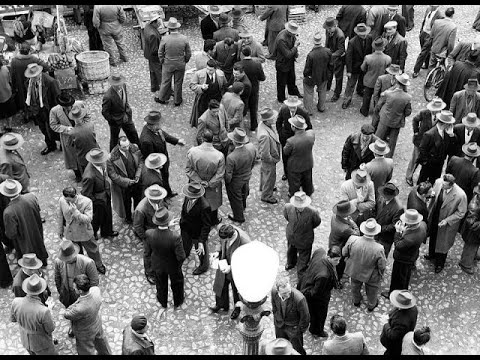

La historia de Rapanui nos lleva a principios del siglo XX, la tierra de la mayoría de nuestros
abuelos y bisabuelos. Allí, en Italia, vivía Aldo Fenoglio, que conocía y sostenía a la
perfección la tradición familiar de sus ancestros: la elaboración del chocolate artesanal. Esta
idea fue transmitiéndose de generación en generación, marcando una de nuestras características
principales que logra perdurar en el tiempo hasta la actualidad.
El abuelo Aldo Fenoglio vivía en Torino (Italia). Antes de la segunda guerra mundial ya
trabajaba en la creación de finas exquisiteces de chocolate artesanal que los habitantes de su
ciudad degustaban cotidianamente con singular aprecio. Trufas, bombones y otras delicias, que
sus manos y las de los integrantes de la familia elaboraban con dedicación, cuidando al detalle
la composición de sus recetas y la estética de cada producto. Aldo era un ser exigente y
perfeccionista, a quien lo hacía feliz el sólo hecho de ver a sus clientes disfrutar en cada
bocado.
El abuelo vivía en la Italia feliz, el Torino de los gianduiots, de los sabores, del chocolate
artesanal y de los tartufos. Hasta que en el año 1939, la guerra, casi sorpresivamente para los
soñadores, puso fin al paisaje y al placer. En medio del conflicto, encontró el amor, se casó
con Inés y como muchos de nuestros ancestros, tuvo que emigrar, llevando consigo las maletas
cargadas de tradición chocolatera.
El gran viaje marcó un paréntesis en la vida de Aldo Fenoglio, pero la continuidad del legado no
había desaparecido en absoluto, a pesar de todo, sólo quedaba por delante un “volver a empezar”.